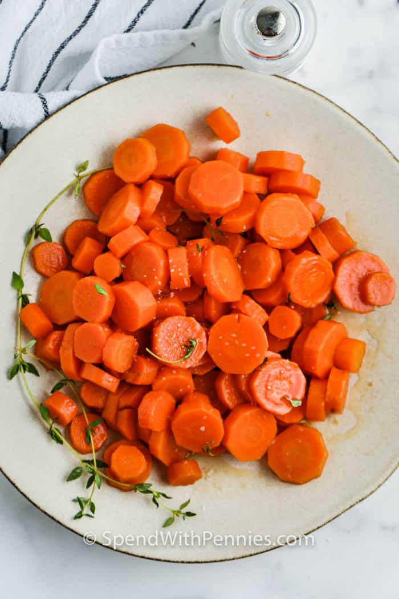

Steamed Carrots

They’re sweet and caramelized in a hint of brown sugar and this recipe takes just one pot and 15 minutes.
Ingredients
- 1 Pound carrots
- 2 tablespoons butter
- 2 tablespoons brown sugar
- 1/4 teaspoon salt or to taste
How to make Steamed Carrots
- Peel carrots and cut into ½ " slices.
- Bring a saucepan of salted water to a boil. Add carrots and simmer 5-6 minutes or until carrots are tender-crisp (do not overcook). Drain well.
- Add butter, brown sugar, and salt to the same pot. Toss with carrots and cook until melted and smooth.
- Serve warm.